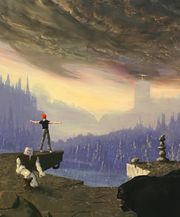
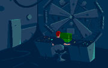
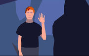
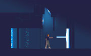
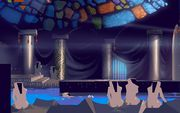
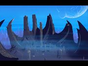

Как в Another World'е скелет его осыпался »
— Садюжка

Массаракш
Another World («Out Of this World» для американцев) — эпичный для многих седых игрофагов этой страны платформер в жанре научной фантастики. Был разработан конторой Delphine Software, а фактически — программистом-аниматором Эриком Ша(й)и (Eric Chahi, это французская фамилия) в далеком 91 году.

Пульт управления циклотроном. На одну персону.
Сюжет вкратце такой: молодой рыжеволосый ученый-нерд по имени Лестер Чайкин темной грозовой ночкой подкатывает к своему циклотрону, чтобы поработать сверхурочно в спокойной обстановке. Как водится, такая подозрительная активность гоняемых по трубе частиц привлекает внимание тусующегося неподалеку грозового фронта. В циклотрон бьет молния, Эльвира окончательно сбивается с пути и выпиливает нашего экспериментатора прямо в другой конец вселенной. С этого и начинается основное веселье.
Нет, там не будет красных монтировок и хэдкрабов, Гордон Фримен был значительно позже и там все было наоборот — другой мир запилили к нам.

Oh hai.
Новый мир населен мычащими человекоподобными ограми с рабовладельческо-средневековой социальной иерархией. Также в ходу оружие, пуляющее лазером и имеющее режим накапливания энергии с мощным выбросом потока какой-то электрической плазмы, способной выпиливать двери, стены и живые организмы в кучку пепла, плюс есть режим установки энергозащиты! И все это из одного пистолета! По виду сам пистолет, кстати, — этакий футуристический парабеллум.

Выпиливание двери
Помимо двухметровых огров также можно обнаружить всякую дикую дичь, вроде животного-смеси из медведя, пантеры и гориллы, 30-сантиметровых сухопутных пиявок с ядовитым когтем, всевозможных щупалец, реликтовых птичек и т. п.
Задача героя — что бы вы думали? — сражаясь с питекантропами, покинуть новый мир, или просто найти место поспокойней. Что характерно, цели такой напрямую не ставилось, герой просто пытался остаться живым и свободным. На каждом уровне решались насущные задачи выживания и продвижения вперёд себя и своего инопланетного приятеля (случайный спутник при побеге из огрской тюряги и, впоследствии, подельник практически во всех противоправных действиях, творимых ГГ). Графика, хотя сейчас кажется примитивной и угловатой, для 1991-го года была лютейшим вином, в частности из-за любовной отрисовки и абсолютно плавной анимации векторных персонажей — одним, то есть двумя, словами, невъебически охуенна. А анимационные вставки… Следующая игрушка конторы («Flashback») обладала ещё лучшей графикой, хотя это был уже 1992. В любом случае, даже с современной точки зрения мир игры наполнен характерной атмосферой далекой пустынной планеты с эпичными ландшафтами, архитектурой и животным миром.
В сабже не было двух одинаковых уровней. То есть они вообще не похожи: осторожное путешествие по пустынному, но смертельно опасному пейзажу чужой планеты сменялось бегством от сносящих буквально за спиной двери охранников рудников, затем аккуратные и тоже смертельно опасные ползания по вентиляции/канализации, среди облаков ледяного пара, пустынные пещеры, бегство от потока воды (не срежиссированное, как в современных играх — запнулся=умер) и многое, многое другое. Основным видом было привычное 2D, но периодически герой полз, садился в кабину инопланетного танка, плыл и т. п. Иногда он огребал пиздюлей, терял оружие, оставался без патронов и терпел разнообразный фэйл, сменявшийся затем лютым вином. Ты перебегал на соседний экран, и тебя внезапно опиздюлил, выбил ствол и теперь держит за грудки здоровый инопланетянин? Дай ему ногой по яйцам, перекатись, схвати пистолет и застрели его. Это не шутка и не ролик, а нормальный — хотя и постановочный — элемент игрового процесса. А после и самому предоставлялась возможность навести ствол на безоружного «огра» и всласть поглумиться над ним (не дай бог подойти поближе — лучше сразу спилить мушку). Добавьте сюда происходящие как бы ближе и дальше плоскости, в которой действует ГГ, события, включающие погони, перестрелки, рукопашные схватки, просто набигающих или съёбывающих инопланетян. Местами, во время самых жарких замесов на последних уровнях, героев обстреливали чуть ли не со всех сторон — перед «камерой» или вдалеке нарисовывался злодей, а то и вообще вылетали «случайные» заряды пущенные как бы издалека (попав как минимум под некоторые из них можно было погибнуть).

Эротика образца 91 года
Во времена, когда не существовало модных Crytek© engine’ов®, всяких DirectX®-15, анизотропных шейдеров и трехмерного эффекта Lens Flare, некоторая условность графики заставляла работать воображение игрока интенсивнее (даже угловатая эротика смотрится аутентично), что вылилось в утверждение что старые игры, типа Another World были труъ, а новые — не совсем.
Отдельные участники вспоминают, что во время поездки одного из отечественных хоровых коллективов по США многими из хористов была куплена Sega Genesis и соответствующие картриджи. В отличие от Mortal Kombat и Jurassic Park, которые создавали лишь локальные тусовки в гостиничных номерах, из разряда «теперь моя очередь блджад!», запуск Out of This World приводил к скоплению в одной комнатушке 15+ школьников, с выпученными глазами и бьющимися сердцами наблюдавших за приключениями векторного нерда. Пути решения проблем вырабатывались мозговым штурмом, а винрарные скриптовые сцены вызывали всенародное ликование, прерывающееся лишь приходом художественного руководителя (ввиду оснащённости последнего пиздюлями, школота засовывала себя под кровать, за занавески, в ванну и только что не в кинескоп).

Панорама местной нерезиновки с утлым фотошопом на заднике.